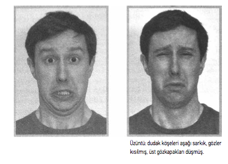
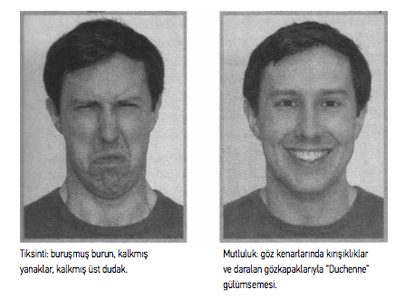
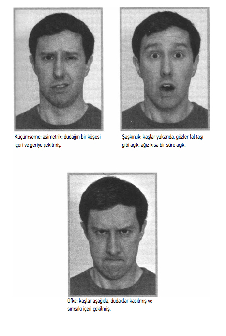

ÜÇ-YÜZ OKUMA
Ağız yalan söyleyebilir, ama yüz hakikati anlatır.
- FRIEDRICH NIETZSCHE
Aldatma tespitinde ilk kural yüzü izlemektir.
Aşikâr görünebilir, bununla birlikte büyük ölçüde kabul gören yüz ifadelerimizin duygu ve düşüncelerimizle -gizli ve bilinçaltı duygu ve düşüncelerimiz dahil- doğrudan bağlantılı olduğu fikri daha kırk yıl önce kökleşti. Kavramı daha çabuk anlamış olsaydık, tarihin nasıl farklı olabileceğini hayal edin. 1938 görüşmeleri sırasında Chamberlain Hitler’in yüzünde, bunu yapmayacağına ilişkin verdiği bütün güvencelere rağmen Führer’in bütün niyetinin Çekoslovakya’yı istila etmek olduğunu okuyabilseydi ne olurdu? Madoff’un yatırımcılarından sadece biri veya Tahvil Borsası Teftiş Kurulu’nun müfettişleri, onlara idare ettiği milyarlarca doların güvende olduğunu garanti ederken gülümsemesine hile karıştığını okuyabilmiş olsalardı ne olurdu? Sistemli yüz okuma araştırması o kadar yeni ki, onun ne kadar faydalı olabileceğini daha yeni fark etmeye başlıyoruz.
İLK BULUŞ
Charles Darwin yüz ifadelerinin bütün kültürlerde biyolojik olarak belirlenmiş ve benzer olduğuna inanıyordu. 1872’deki kitabı The Expression of the Emotions in Man and Animals’da Darwin “Yüksek sesle kahkahadan kibar gülümsemeye sınıflandırma” ve “Çiğnenmiş ahlak kuralları ve geleneksel adetlerden kaynaklanan utanç” gibi başlıkları araştırdı.78 Dışavurumun fizyolojik nedenlerine ilişkin ayrıntılı bir araştırmaya ek olarak -açıklama olarak fotoğraflarla, o zamanlar bir yenilik- Darwin, insan ifadelerinin her bireyde aynı olduğu kanaatini ortaya koydu.
78 Darwin, Charles, The Expression of the Emotions in Man andAnimals, 3. baskı. (New York: Oxford University Press, 1998), içindekiler. (İlk olarak 1872’de yayımlandı.)
Bu kadar çok ifade çeşidinin bizim cephemizde bilinçli hiçbir analiz süreci olmadan ânında tanınması, beni çoğu kez tuhaf bir olgu olarak etkilemiştir. Somurtkan veya muzip bir ifadeyi kimsenin açık bir şekilde tarif edemeyeceğine inanıyorum; buna rağmen pek çok gözlemci bu dışavurumların çeşitli insan ırklarında tanınabileceği konusunda hemfikir. Duchenne’in eğimli kaşlı genç erkek fotoğrafını gösterdiğim neredeyse herkes... derhal keder veya ona benzer bir duyguyu ifade ettiğini açıkladılar; yine de bu insanlardan belki biri veya bin kişiden biri, iç kısımlarda buruşuk kaşların yatıklığı hakkında veya alındaki dik açılı kırışıklar hakkında önceden kesin bir şey söyleyemeyebilirdi... insan tarafından sergilenen belli başlı dışavurumların bütün dünyada aynı olduğunu çok ayrıntılı olarak göstermeye çalıştım.79
79 A.g.e., “Concluding Remarks.”
Darwin daima ailesinin bireylerini denek olarak kullanmaya hazırdı ve ilk çocuğu William’ı özellikle yakından izledi.
Bununla birlikte çocuklarımızın içgüdüsel olarak her-hangi bir dışavurumu tanıdıklarını kanıtlamak çok zor. ilk çocuğumda dikkatimi bu noktaya verdim, başka çocuklarla ilişki kurarak bir şey öğrenmiş olamazdı ve ben onun deneyim yoluyla herhangi bir şey öğrenmiş olamayacak kadar küçük bir yaşta bir gülümsemeyi anladığına ve gülümseme görmekten, o gülümsemeye karşılık vermekten zevk aldığına kanaat getirdim. Bu çocuk dört aylık olduğunda, karşısında bir sürü tuhaf ses çıkardım ve yüzümü garip şekillerde buruşturdum ve vahşi görünmeye çalıştım; ama sesler de, eğer çok yüksek değilse, ekşi suratlar gibi komik şakalar olarak algılandı; ve ben o sırada bunu o ekşi suratların öncesinde ve beraberinde gülümsemeler olmasına yordum. Beş aylık olduğunda bir merhamet ifadesini ve ses tonunu anlıyor gibiydi. Altı aylık olduktan birkaç gün sonra bakıcısı ağlıyormuş gibi yaptı ve bebeğin yüzünün ânında bir hüzün ifadesi yüklendiğini gördüm, ağzının köşeleri karamsarlıkla aşağı sarkmıştı; şimdi bu çocuk başka bir çocuğu ağlarken nadiren görmüş olabilir ve bir yetişkinin ağlarken hiç görmedi ve bu kadar küçük bir yaşta konu üzerine akıl yürütebileceğinden şüphe etmeliyim. Bu nedenle bana öyle geliyor ki, tabiatından gelen bir duygu ona bakıcısının sahte ağlamasının hüzün ifade ettiğini anlatmış olsa gerek; ve bu da bir acıma hissiyle onda hüzün uyandırdı.80
80 A.g.e.
Elbette bu Darwin’in on dokuzuncu yüzyılın mürekkep yalamış sınıfı tarafından hoş karşılanmayan fikirleri ortaya ilk atışı değildi. Evrim gerçeklerini yutmak yeterince zor olmuştu; şimdi de insanların hayvanlarla daha da yakından akraba olduğu öne sürülüyordu. Eğer öğrenilmiş değilse, doğuştan geliyorsa, yüz ifadeleri -insanlığın incelikli duygularının ve zengin zekâsının çok yakın kanıtı- kesinlikle benzersiz bir şekilde insana özgü görünmüyorlardı.
The Expression of the Emotions in Man and Animals’ın birinci baskısının çabucak tükenmesine rağmen, ortaya attığı fikirler çabuk rağbet görmedi. Yirminci yüzyılın ortalarından bilim cemaatinde ortak görüş, farklı kültürlerin kendi ifadeler bütününü geliştirdiği ve onları sosyalleşme ve taklit yoluyla kuşaklar boyunca aktardığıydı. Margaret Mead, Gregory Bateson ve Ray Birdwhistell gibi önde gelen antropologlar Darwin’in araştırmasının insan biçimcilik (antropomorfizm), hikâyelerle ilişkilendirmeye yatkınlık (anecdotalism) ve anlaşılır Batılı önyargısıyla lekelendiğini iddia ettiler81 1970 yılında yapılan bir görüşmede, hayatı boyunca sözsüz iletişim üzerine bir araştırma yürütmüş olan Birdwhistell kesin bir şekilde, “Evrensel hareketler yoktur. Bildiğimiz kadarıyla bütün toplumlarda aynı anlamı taşıyan tek bir yüz ifadesi, duruş biçimi veya beden pozisyonu yoktur”82 diye ifade etti. Mead ve Bateson kültür üzerinde biyolojinin etkisini vurgulamanın insanlar ve uluslar arasında tehlikeli kıyaslamalara götürebileceğinden endişeliydi. 1972’de yazdığı otobiyografisinde Mead, “insanın belli özellikleri cinsiyet veya yaş ya da ırk, vücut yapısı veya ten rengi ya da şu ya da bu topluma mensup olmakla ilişkilendirme ve sonra böyle gelişigüzel bağlantılara dayanarak haksız kıyaslamalarda bulunma eğilimi” 83 konusunda endişesini belirtti.
81 Jerold Lowenstein, “The Science of Luck,” California Wild, Bahar 2004.
1960’larda Boston Üniversitesi’nden William Condon adında bir psikolog, mikroanaliz adını verdiği bir araştırma yöntemiyle ortaya çıktı. Condon iki insan arasındaki kısa etkileşimleri filme çekti, sonra filmleri kare kare inceledi. (Dört buçuk saniyelik bir filmi araştırması bir buçuk yılını aldı ve 130 film kopyası eskitti.) Condon her kare için konuşmacıların yaptığı ufak hareketlerin yanı sıra konuşmalarının ayrılmış hecelerini kaydetti. Her kare bir saniyenin yirmi beşte biri kadar bir sürede geçiyordu; “sormak” kelimesindeki “k” harfi bir saniyenin kırk sekizde biri kadar zaman alıyordu. Condon her konuşmacının hareketlerinin konuşmasıyla eşzamanlı olduğunu buldu. Ayrıca her konuşmacının devinimlerini konuşmasıyla uyumlu hale getirdiğini de fark etti. Onun açıklamasına göre, iletişim “herkesin birçok gizli boyutta anlaşılması güç ve paylaşımlı anlarda faaliyet içinde olduğu bir dans”84 gibiydi.
84 George Leonard, The Silent Pulse: A Search for the Perfect Rhythm That Exists in Each of Us (Layton, Utah: Gibbs Smith, 2006), 25-26.
YALAN YAKALAMA TAVSİYESİ
Bir insanın yüzündeki duygu parlamalarına (“yüzdeki mikro ifadeler” olarak bilinir) çok kısa bir süre bakma alıştırması yapın. Kısa olmakla birlikte bu parlamaları bastırmak neredeyse imkânsızdır ve bu nedenle bir insanın gerçekte ne hissettiğine dair güvenilir ipuçları sağlarlar.
Film analizi, psikanalizde hastaların filmlerini inceleyen ve filmleri kare kare “mikro hareketler” dedikleri kare kare incelemelere bölen E.A. Haggard ve Kenneth S. Isaacs için de çok önemli bir araçtı. Araştırmayla ilgili raporları Micro-momentary Facial Expressions as Indicators of Ego Mecha-nisms in Psychotherapy (Psikoterapide Ego Mekanizmalarının Belirteçleri Olarak Anlık Mikro Yüz İfadeleri) 1966’da yayımlanarak Haggard ve Isaacs’ın olguyu ele alan ilk sosyal bilimciler olmalarına yol açtı.
PAUL EKMAN VE FORE KABİLESİ
Fakat yıllar için en çok ilgi gören Paul Ekman’ın araştırması oldu. Ekman ilk olarak 1965’te yüzleri incelemeye başladığında, The Expression of the Emotions in Man and Animals’ı okumamıştı bile. Ekman’ın konunun dikkate değer olduğunu hissetmeye başlaması, Silvan Tomkins’le karşılaşması (bakın Bölüm 2) ve onun makalelerini okumasından sonra oldu. Şili,Arjantin, Japonya ve Brezilya’ya seyahatler yaptı ve her ülkede, çeşitli ifadelerin fotoğraflarını gösterdiği insanların onları aynı şekilde tanımladığını anladı.
Bunlar ne de olsa medyanın yüzdeki tepkilerin standartlaşmasına yardım etmiş olabileceği gelişmiş ülkelerdi. Bu nedenle Ekman Papua Yeni Gine’ye bir gezi yapmaya karar verdi. Daha önce hiç film, kitap, dergi veya ziyaretçiye maruz kalmamış, son derece dünyadan soyutlanmış bir toplum olan Fore kabilesiyle çalışmayı seçti. Mantık yürüterek Fore kabilesinin muhtemelen başka bir kültürün fiziksel olarak kendini nasıl ifade edebileceğine ilişkin yerleşik fikirlere sahip olamayacağını düşündü.
Ekman kabile üyelerine çeşitli yüz ifadeleri takınmış insanların fotoğraflarını gösterdiğinde, kabile bu ifadeleri aynı Batılı birisinin yapacağı şekilde yorumladı. Araştırmacılara bir insanın iyi bir haber aldığında veya kokuşmuş bir hayvan cesedi bulduğunda nasıl tepki verebileceğini göstermeleri istendiğinde, Fore insanlarının keyif, tiksinme veya başka herhangi bir duyguyu dışa vurmak için kullandığı ifadeler, tüm dünyada başka kültürlerden insanlar tarafından kullanılanla aynı birleşik kas hareketlerini faaliyete geçirdi.85 Bu kanıt insanda yüz ifadelerinin kültürel olarak belirlenmiş değil, biyolojik açıdan kalıtsal olduğunu ispatlıyor gibiydi.
85 Paul Ekman, Emotions Revealed (New York: Henry Holt, 2003), 6-8. Ayrıca http://www. artknowledgenews.com/Paul_Ekman.html.
Ekman ve diğerlerinin dikkat çektiği gibi, kültür kendini yüzlerimizde temsil eder. Duyguların kalıtsal olmalarına ve bizim onlara ilişkin yüz ifadelerimizin içgüdüsel olmalarına rağmen, bir insanın yüzünü kontrol etmek için gösterdiği çaba, altyapısından ve yetiştirilme tarzından çok fazla etkilenir. Güçlü duyguları gizlemek gerektiğine inanan bir kültürde yetiştiyseniz, onları göstermemek için daha çok uğraşacaksınız. Duyguları enerjiyle açığa vurmanızın bekleyen insanların bulunduğu bir yerde büyüdüyseniz, gülümseyecek, suratınızı ekşitecek veya daha kolay ağlayacaksınız.
Buna rağmen, kimse yüzünü tümüyle kontrol edemez. Bir deneyde Ekman Amerikalı ve Japon öğrencilere ameliyat ve kazaların canlı filmlerini gösterdi; öğrenciler filmleri tek başına veya grup halinde izlediler. Ekman ister tek başlarına olsunlar ister grup halinde, Amerikalı öğrencilerin aynı şok ve dehşeti gösterdiğini buldu. Diğer taraftan Japon öğrenciler grup halindeyken yüzlerini tek başlarınayken yaptıklarından daha kayıtsız tuttular.86 Güçlü duygudan sakınmaya eğitimli olduklarından, duygularını açığa vurmamakla Amerikalı öğrencilere göre daha fazla ilgiliydiler.
86 Mark Cook, Perceiving Others: The Psychology of Interpersonal Perception (New York: Methuen & Co., 1979), 56-57.
Ekman ilk zamanlarda kırk üç farklı yüz kasını ve bunların hareketlerini ayırdı. Değişik kas kombinasyonlarının insanda on binden fazla muhtemel yüz ifadesine yol açtığını hesap etti, bunlardan üç bini duygularımızın yararlı belirteçleriydi. Bu üç bin ifade, her biri tüm kültürlerde aynı şekilde dışa vurulan yedi temel insan duygusuna göre sınıflandırılabilir.
KENDİNİZ GÖRÜN
Yüzdeki her kasın nasıl çalıştığına ayrıntılı, dijital olarak canlandırılmış bir bakış için şu adrese gidin, http://www. artnatomia.net/uk/artnatomyProgram.html.
YEDİ TEMEL İNSAN DUYGUSU VE NEYE BENZEDİKLERİ
Aldatıcı yüzleri incelemeye geçmeden önce, samimiyetle ifade edilen duyguların neye benzediklerini gözden geçirmemiz gerek. “Mutluluğun neye benzediğini biliyorum. Gülümsemedir. Üzüntü de aşağı sarkmış bir ağızdır” diye düşünüyor olabilirsiniz. Emin misiniz? “Gülümsemeyle göze çarpan birçok olumlu duygu vardır - birkaç isim vermek
gerekirse, hoşlanma, fiziksel veya duyusal haz, memnuniyet ve eğlenme. İnsanlar mutsuz olduklarında da gülümserler” diye yazar Ekman Telling Lies kitabında.87 Mutluluk duygusuyla birlikte diğer altı temel duygunun da neye benzediğine daha yakından bakalım.
87 Paul Ekman, Telling Lies (New York: W.W. Norton, 2001), 150.

Korku
Korku duyduğumuzda, kaşlarımız kalkarak üst gözkapak-larımızı da gözlerimizi daha çok meydana çıkaracak şekilde kaldırır. Ağzımız istemsiz olarak açılır, dudaklarımız yatay olarak kasılır ve çenemizi geri çekeriz. (Çoğu hayvan da korkularını aynı şekilde dışa vururlar, tavşanlar gibi geriye çekecek çeneleri olmayan hayvanlar hariç; tavşanlar onun yerine kulaklarını geriye yatırırlar.)

Üzüntü
Üzgün olduğumuzda dudaklarımızın köşeleri aşağı sarkar, gözlerimizi kısarak yanaklarımızı kaldırırız ve üst gözkapak-larımız düşer. Bazı psikologlar üzgün bir yüzün, ağlayan bir yüzün “düşük yoğunluklu” hali olduğuna inanıyor; diğerleri ikisinin birbirinin dereceleri olarak değerlendirilmemesi için yeterince ince farklar olduğuna inanıyor.92* Her iki durumda da gözyaşları tek başına mutlaka üzüntüyü göstermiyor.
Tiksinti
Burnumuzu buruşturarak ve yanaklarımızı ve üst dudağımızı kaldırarak tiksindiğimizi gösteririz. Bu ifadenin atalarımızda bozuk veya çürümüş yiyeceğe ve mide bulandırıcı kokulara tepki olarak ortaya çıkmış olması muhtemel. Zaman içinde tiksindirici olarak algılanan davranışa karşılık olarak gözükmeye başladı.
Mutluluk
Bir fotoğraf için “gülümse” demenin yeterince kolay olmasına rağmen, mutluluğu sahici bir “Duchenne gülümsemesi”yle ifade ederiz. Bu, istemsiz hareketler yüzünden göz kenarlarında kaz ayaklarının oluşması ve gözkapaklarının daralmasıyla aynı anda ağzın köşeleri yukarı kıvrıldığında ortaya çıkar.
Küçümseme
Diğer altı temel ifadeden farklı olarak küçümseme asimetrik şekilde gösterilir: Dudağın bir köşesi içeri ve geriye çekilir. Çene bazen kalkar. Küçümseyici bir ifadenin gerçekte bir tiksinme ifadesi olup olmadığı konusu büyük bilimsel tartışmaya yol açtı, ama asimetri ikisini birbirinden ayırıyor gibi görünüyor.
Şaşkınlık
Şaşırdığımızda kaşlarımız kalka, gözkapaklarımız genişler ve ağzımız istemsiz açılır. Ağız, korkuyla da açılır - ama o durumda daha geniştir ve geri çekilmiştir. Şaşkınlık genellikle çok kısa bir süre gösterilir. Yerini çabucak mutluluk gibi sonradan ortaya çıkan duygular alır:
Benim için bir sürpriz parti planladığınıza inanamıyorum!!!!!
veya öfke:
Ben... inanamıyorum... benim için bir sürpriz parti planlamışsınız...

Öfke
Öfke aşağı inmiş kaşlar, kalkık üst gözkapakları, yukarı çekilmiş alt kapaklar ve gergin, kısılmış, içeri çekilmiş dudaklarla gösterilir. Öfkeli bir yüz çoğu zaman gözlerin arasında dikine bir kırışmaya neden olur. Plastik cerrahlar bu durumu kendi yararlarına kullanabildiler; gözlerin arasında kaş çatmaktan kaynaklanan kırışıkları yok eden Botoks iğnelerinin insanların “daha az öfkeli” görünmesini sağladığı söyleniyor.88
88 Ekman’dan uyarlanan ifadelerin listesi, Telling Lies, 128-151. Ayrıca Paul Ekman grup çalışması, “Emotions Revealed,” Nisan 2008.
Bu temel ifadelerin ne için olduklarını anlamak çok biçimsel bir eğitim gerektirmez. Gözleri fal taşı gibi açık, ağzı dişlerini ortaya çıkaran bir gülümsemeyle açık bir halde hoplayıp zıplayan birini gördüğümüzde, onun sevinç ifadesini dehşet veya hatta tehlike ifadesiyle karıştırmamız olası değildir (onunla karanlık, tehlikeli bir ormanda karşılaşmadıkça). Çok kolay ayırt edilebildikleri için ve birçok sosyal gelenek duygularımızı saklamamızı gerektirdiği için, çoğu zaman bir ifadenin yerine ötekini kullanmaya çalışırız. Bu yüzden, postanede yarım saat bekledikten sonra öfkeden köpürmenize rağmen, bankoya doğru ilerlerken yüzünüze bir gülümseme yapıştırabilirsiniz. Duygularınızı incittiğini göstermemek için, bir arkadaşınızın düşünmeden ettiği kırıcı bir lafı şakaya vurabilmenizin nedeni budur.
YETERSİZ BİR MASKE
Bununla beraber çoğu insan gerçek duygularının ne kadar sık dışarı sızdığını fark etmez. Sonuçta kendi yüzlerimizi görmeyiz! Bazı insanların yüz kaslarını idare etmekte başkalarına göre daha becerikli olmalarına rağmen, kimse yüzünü bütünüyle kontrol edemez. Yüz ifadelerimizi düzenleyen nörolojik sistemler doğrudan beynimizin amigdala ve alın korteksi gibi duyguyu işleyen alanlarıyla bağlantılıdır. Bu bağlantı Malcolm Gladwell’in “istem dışı ifade sistemi”89 dediği şeyi yaratır. Bir etki-tepki gerçekleşir: Bir duyguyu hissettiğimizde, beynimiz yüzümüze o duyguyu gösterebilmemiz için bir mesaj gönderir. İşlem o kadar hızlı gerçekleşir ki, biz daha duygunun bilincine varmadan yüzümüz hissettiğimiz şeyi dışa vurur. Yani duygunun kendini bilinçdışı açığa çıkarmasını önlemek için yapabileceğimiz fazla bir şey yok.
89 Malcolm Gladwell, “The Naked Face,” The New Yorker, 5 Ağustos 2002.
Bilinçdışı ifadeleri yakalamak bir gözlemci için neredeyse imkânsızdır ve bu ifadeler yok olmadan önce başka birisine göstermek kesinlikle imkânsızdır. Bir yalanını alıcı ucunda bulunan en sezgisel ve keskin bakışlı gözlemci bile bir yalancının yüzündeki gizli küçük aldatma işaretlerini gözden kaçırabilir. Fakat bir kamera her şeyi görür. Film ve video sayesinde psikologlar ve başka araştırmacılar yüzde meydana gelen değişimleri izlemek için sınırsız fırsatlara sahip oldular. Denekleriyle yaptıkları görüşmeleri ve gizli kamera çekimlerini istedikleri kadar izleyebilirler. Bu, onlara ve bize insan yüzünün açığa vurmaya muktedir olduğu sayısız ifadeyle ilgili bir bilgi hazinesi sağlar. Film olmasaydı, Ekman, onu yalan tespit etmeyi geniş kapsamlı araştırmaya iten ikinci büyük buluşunu gerçekleştiremeyebilirdi.
ONA MARY DİYORLARDI
Yeni Gine’nin dağlık bölgelerinden döndükten sonra yüz ifadelerinin biyolojik kökeni ve evrenselliği hakkında bulgularını ülke çapında araştırmacılara ve tıp uzmanlarına anlattı. Ekman ayrıca akıl hastanelerinde çalışan terapistlere de sunumlar yaptı, ona daha önce düşünmediği bir şey sormuşlardı: Ekman’ın analiz ettiği sözsüz davranışlar bir insanın yalan söyleyip söylemediğini açığa çıkarabilir miydi? Terapistler akıl hastalarının sadece fırsat bulur bulmaz kendilerine zarar vermek için hastaneden taburcu edilmek üzere doktorlarını yeterince iyileştiklerine başarıyla inandırabileceklerinden endişe ediyorlardı.
Ekman meraklanmıştı. Psikiyatrik hastalarla saatler süren görüşmeleri filme çekerek zihinsel bozuklukların tipini ve şiddetini gösterebilecek belli ifade veya hareketleri araştırdı. Yine kare kare bir analiz açıklayıcıydı. Ekman bazı hastaların ara sıra söyledikleriyle tamamen çelişkili görünen anlık duygular sergilediklerini fark etti. Bir denek görüşmeciyi iyi hissettiğine inandırabilir - yine de kelimelerle eşzamanlı bütünüyle farklı bir ifade yüzünden geçiyordu. Ona bir şey sakladığına dair kanıt veren tek hastanın adı Mary’ydi. Görüşmesi sırasında doktorunu iyi hissettiğine ikna etmiş ve bir hafta sonu izni istemişti. Bununla birlikte daha sonra, izni almadan önce, kendini öldürmeyi planladığını itiraf etmişti. Bunun bilen Ekman ve meslektaşları onun görüşmesini dört saat boyunca incelediler. “Doktorunun gelecekle ilgili sorularını cevaplamadan önce bir anlık bir duraklamada, ağır çekimde yüzünde çok kısa süreli bir çaresizlik ifadesi gördük. O kadar hızlıydı ki filmi incelediğimiz ilk birkaç seferde atlamıştık. Saklı duyguların bu çok kısa mikro ifadelerde açığa vurulabileceği fikrine bir kez sahip olduğumuzda, araştırdık ve tipik olarak bir anda bir gülümsemeyle örtülmüş daha birçoklarını bulduk.”90
90 Ekman, Telling Lies, 16-17.
Tam Ekman’ın bu çalışmayı yürüttüğü sırada İsviçreli psikologlardan oluşan bir ekip Cenevre’de bir psikiyatri servisinde hastalarla görüşme yapıyordu. Bu hastaların yarısı intihara teşebbüs etmişti. İntihara eğilimi olan hastalara hâlâ yaşamlarına son vermek isteyip istemedikleri sorulduğunda, çoğunda çok kısa süreli tiksinti veya küçümseme bakışları görüldü - muhtemelen ya görüşmecilerine karşı ya da kendilerine ve değersiz gördükleri yaşamlarına karşı. İntihar eğilimi olmayan hastalardan hiçbiri bu ifadeleri sergilemedi.91
91 Michael Heller ve Veronique Haynal, “Depression and Suicide Faces,” What the Face Reveals: Basics and Applied Studies of Spontaneous Expression Using the Facial Action Coding System’da (FACS), 2. baskı, editörler Paul Ekman ve Erika L. Rosenberg (New York: Oxford University Pres, 2005), 496-n/a, Daniel Zalewski tarafından bildirildiği gibi, “Written on the Face,” Lingua Franca, http://linguafranca.mirror.theinfo.org/9709/ip.9709.html.
YALAN YAKALAMA TAVSİYESİ
Bir insanın hareket ve ifadelerindeki asimetriye dikkat edin. Tek taraflı gülümsemeler, kaş çatmalar ve omuz silkmeler bir insanın gerçekte hissettiği şeyi gizler. Doğal içten hareketler genellikle her iki tarafta dengeli bir şekilde görülür.
Bu buluşun tedavi edici değere sahip olduğu açıktı. Mikro ifadelerle ilgili araştırmanın başla alanlarda da muazzam bir potansiyele sahip olduğu gerçeği de aynı derecede aşikârdı. Ekman, meslektaşları Wallace Friesen ve Joseph Hager’le birlikte Yüz Hareketi Kodlama Sistemi’ni (Facial Action Coding System) geliştirdi. İlk baskı 1978’de yayımlandı ve kitapçık o günden beri düzenli olarak güncellendi. FACS kodlamada uzmanlar duygusal yoğunluğu tespit etmekte ve örneğin bir çene kaldırma, çene sıkma veya çeneyi yana çekme hareketin-deki en ince farkları ayırt etmekte oldukça hassaslaşırlar. Yanak emme, dudak silme, burun deliğini genişletme, dil şişirme ve boyun germeye dikkat ederler. Bu, öncelikle araştırmacılar tarafından kullanılan, ama aynı zamanda bilgisayar grafik animatörlerinin ve bazı psikoterapistlerin ve FBI sorgucula-rının da kullandığı son derece ayrıntılı ve çaba gerektiren bir analizdir. Yüzün ve onun aldatıcı ifadelerinin araştırılmasında yapıtaşlarını sağlar; bu iş olası bir tıp araştırması için anatomiye hâkim olmaya çok benzer. Bununla birlikte yüzdeki temel duygusal ifadeleri ve onları gizlemeye çalışırken kullandığımız karmaşık yöntemleri yorumlayabilmek için FACS kitapçığının her sayfasını öğrenmeniz gerekmez.
EVRENSEL YALANLAR
Yalan her ülkede ve her kültürde görülür ama yalan söylemenin nedenleri dünya genelinde büyük çeşitlilik gösterir. İnsanların yalanları haklı gösterme yöntemleri, bir yalanı açığa çıkarabilecek yüz ifadelerini kontrol etmek çabaları ve kendi yalan yakalama kabiliyetlerine ilişkin tahminleri de öyle. Kültürler arası yalan söyleme üzerine bir araştırma aşağıdaki ilginç gerçekleri ortaya çıkardı:
Bir grubu korumak için yalan söylemenin -bir bireye zararı dokunsa bile- bireye kalkan olan ama gruba zarar veren yalan söylemeye göre daha iyi olup olmadığı sorulduğunda Çinli çocuklar grubu koruyan yalanları tek bir insanı koruyan yalanlardan daha az zararlı görürken, Kanadalı çocuklar yalanları tersinden sıraya koydu. Bunun nedeni belki Kanada kültüründe bireysel haklara büyük değer verilmesi olabilir.
Bazı kültürlerde insanlar duyguyu okumak için arkadaşlarının gözlerine odaklanırlar; diğerlerinde, ağzı izlerler. Gözlere yoğunlaşmak genellikle Japonya gibi duyguları kontrol etmenin öncelik olduğu ülkelerde daha yaygındır. Ağız kaslarını kontrol etmek göz kaslarına göre daha kolay olduğundan, Japonlar sahte duyguyu fark etme konusunda dikkatini ağza vermeye eğilimli Kuzey Amerikalılardan daha iyi olabilirler. Japonların duygu simgeleri (emotikonlar) bile gözlere daha büyük önem verir - mutluluk için Japon emotikonu iken, Kuzey Amerika’da aynı duygu :-) şeklinde ifade edilir.92
92 Japanese May Be Better Than Americans at Detecting Lies,”Medical News, Nisan 2007, http://www.news-medical.net/?id=23196.
Bir araştırma çok dilli denekler ikinci dillerine birinci dillerinde konuştuklarında gözlemcilerin yalanları yakalamada daha zorlandığını buldu. Çok dilli yalancılar daha sonra ikinci dillerini kullanırken sözsüz davranışlarını kontrol etmekte birinci dillerini kullanırken olduğundan daha büyük zorluk çektiklerini söylediler.93
93 Keens Hiu Wan Cheng ve Roderic Broadhurst, “The Detection of Deception: The Effects of First and Second Language on Lie Detection Ability,” Psychiatry, Psychology and Law 12, sayı 1 (Haziran 2005): 107-118, http://goliath.ecnext.com/coms2/gi_0199-4509429/The-detection-of-deception-the.html.
Teksas Hıristiyan Üniversitesi’nin bir profesörü tarafından yetmiş beş ülkede yürütülen bir anket, en yoksul ülkelerin sakinlerinin yalan yakalama kabiliyetlerini varlıklı ülkelerde yaşayan insanların yaptığından daha fazla değer biçme eğiliminde olduklarını buldu. Araştırma ayrıca dünyanın büyük dinlerinin arasında Protestanların büyük olasılıkla yakalanmadan yalan söyleyebileceklerine Katoliklerden ve Müslümanlardan daha fazla inandıklarını buldu.94
94 International Study of Lying Shows Different Attitudes Among Cultures,” 17 Mayıs 2004,http://govpro.com/issue_20040101/gov_imp_28737/.
En iyi yalancılar ve yalan dedektifleri kimlerdir? Yetmiş beş uluslu çalışmaya göre Türkler ve Ermeniler yalanların yüzde 70’ini tespit edebildiklerini söyleyerek kendilerini en iyi yalan dedektifleri olarak görürken, Norveçliler ve İsveçliler kendilerini en kötü dedektifler olarak değerlendiriyorlar. Yalanlarının yüzde 25’inden azının yakalandığına inanan Moldova ve Botswanalılar kendinden emin yalancılar listesinin en tepesine yerleşirken, Şilililer ve Arjantinliler yalanlarının yüzde 60’ının yakalandığını düşünüyorlar. (Kabaca bütün yalanların yarısını yakalayabildiklerini ve yarısından da yakayı kurtardıklarını söyleyen Amerikalılar orta sırada kalıyor.)95
95 A.g.e.
Teksas Hıristiyan Üniversitesi’nin kültürler arasında yalan yakalamayı incelediği bir başka araştırmasında Amerikalı ve Ürdünlü denekler ya doğruyu anlatırken ya da yalan söylerken videoya kaydedildi. İkinci Amerikalı grubu ve Ürdünlü grubu sözsüz aldatma kaçaklarını değerlendirmek üzere video kayıtlarını izlediler. İkinci gruptaki denekler yalan yakalamada kendi milletlerinin içinde eşit düzeyde becerikliydiler, ama hiçbir millet kendi kültürünün dışındaki aldatmayı yakalayamadı.96 İlginç şekilde Ürdünlü ve Malezyalıların kullanıldığı benzer bir çalışma deneklerin kendi milletlerinin dışında yalan yakalayabildiklerini buldu.97
96 Charles F. Bond, Jr., Adnan Omar, Adnan Mahmoud ve Richard Neal Bonser, “Lie Detection Across Cultures,” Journal of Nonverbal Behavior 14, sayı 3 (Eylül 1990): 189-204, http://www.springerlink.com/content/r414681657143728.
97 Fayez A. Al-Simadi, “Detection of Deceptive Behavior: A Cross-Cultural Test,” Social Behavior and Personality, 1 Ocak 2000, http://www.highbeam.com/doc/IP3-56358431.html.
ALDATMADA DOKUZ İPUCU
Paul Ekman’ın araştırması bu zamana kadar dokuz yüz belirtecini aldatmanın güvenilir ipuçları olarak ayırdı - bakmayı bildiği takdirde herkesin yakalayabileceği.
1. Mikro İfadeler
Ekman filmde neyi arayacağını bir kez anladığında, yüzdeki saniyenin yirmi beşte biri kadar kısa bir sürede görünüp kaybolan istem dışı ifadeleri yakalayabiliyordu. Ekman’ın tabiriyle bu mikro ifadeler deneğin bastırmak istediği alttaki gerçek duyguları “sızdırır.”
S: Cumartesi günü bana birkaç saat verebilir misin? Bu düzeltileri pazartesi sabahı göndermem gerek.
C: Kelimeler: Elbette! Zaten bu hafta sonu pek bir şey yapmıyorum.
Mikro ifade: Siz “Seni pislik!” diye düşünürken öfke bir an için kendini gösterir.
Mikro ifadeler küçüktür ve fark edilmeleri zordur ama eğitimli bir yalan dedektifi için -alt tarafı bir saat çalışmış birisi için bile- tren rayındaki uyarı ışıkları gibidirler. Kendisi bunun farkında olmasa bile denek açık bir işaret yolluyor: “Hazır ol - bir yalan yolda.” Çoğunlukla denek yalnızca bu anlık ifadenin onun ele verdiğini fark etmemekle kalmaz, aynı zamanda altta yatan duygunun da bilincinde değildir.
2. Bastırılmış İfadeler
Yüzdeki ikinci aldatma göstergesi aynı zamanda yalan söyleyecek biri duygularını saklamaya çalıştığı zaman görülür ama tek bir duyguyu bilinçdışı açığa vuran bir mikro ifadeden farklı olarak bastırılmış bir ifade birden çok duygunun işaretleşmesini gerektirir ve kasıtlı yapılır.
Diyelim yıllar önce ayrılmış olması gereken bir üyeyle birlikte bir kitap grubundasınız. Bu insan her toplantıya geliyor ama kimsenin söylediği hiçbir şeye dikkat vermiyor. Her iki dakikada bir ya notlarını düşürüyor ya da “Hangi sayfadayız?” diye soruyor.
Sabırlı olmanız gerektiğini biliyorsunuz. Bu kadın sinir bozucu olabilir ama yine de okumayı seviyor. Yine de ona bağırmamak için kendinizi zor tutuyorsunuz. Ve milyonuncu keredir ona hangi sayfada olduğunuzu söylerken, yüzünüze oturtmaya z-z-z-zorladığınız gülümseme daha çok yüzünü ekşitmeye benziyor.
Hakikati gizlemeye çalışan biri “tehlikeli” bir ifadenin -onun gerçek duygularını açığa çıkarabilecek bir ifadenin- gün yüzüne çıkma belirtisi gösterdiğini hissettiğinde, onu etkin şekilde başka bir ifadeyle örtmeye uğraşacaktır. Gizleme ifadesi çoğu kez gülümsemedir. Usta yalan dedektifleri gülümsemelere büyük dikkat gösterir. Gülümseme, bir insanın yapabileceği en kolay istemli yüz ifadesidir ve çoğunlukla olumsuz duyguları gizlemek amacıyla kullanılır.98 Gülümsemeler oldukça iradi ve güçlüdür - kısa bir gülümseme bile doksan metre uzaktan görülebilir.99
98 Ekman, Telling Lies, 36, 127, 149-160. Ayrıca Paul Ekman ve Wallace Friesen’de, Unmasking the Face (Cambridge, Mass.: Malor Boks, 2003), 99-113, 135-153.
99 Deborah Blum, “Face It,” Psychology Today, Eylül/Ekim 1998.
İnsanlar sahte gülümsemeleri yaşamın ilk yıllarında kullanmaya başlar. Araştırmalar on aylık bebeklerin yanlarına gelen yabancılara samimiyetsiz gülücükler yolladıklarını ama anne gelir gelmez doğal gülümsediklerini gösterdi.100 Büyük olasılıkla evrim bize karışık duygular beslerken bile insanların onları görmekten mutlu olduğumuzu düşünmelerini sağlamanın yararımıza olduğunu öğretti. Bir daha sefere bir iş arkadaşınızın odasına beklenmedik bir ziyaret yapmaya karar verdiğinizde bunu düşünmek isteyebilirsiniz.
100 Nathan Fox ve Richard Davidson, “Electroencephalogram Asymmetry in Response to the Approach of a Stranger and Maternal Separation in 10-Month-Old Infants,” Developmental Psychology 23, sayı 2 (Mart 1997): 233-240. Bundan Ekman ve Rosenberg tarafından What the Face Reveals’da alıntı yapılır, 212. Çevrimiçi kayıt: http://eric.ed.gov/ERICWebPortal/custom/ portlets/recordDetails/detailmini.jsp?_nfpb=true&_&ERICExtSearch_SearchValue_0=EJ355941 &ERICExtSearch_SearchType_0=eric_accno&accno=EJ355941.
3. Güvenilir Kas Yapıları
Bir ifadenin gerçek ya da sahte olup olmadığını belirlemeye çalışırken, aldatmanın yüzdeki üçüncü belirteci olan güvenilir kas yapılarına dikkat etmelisiniz. Birçok yüz kası kolayca kontrol edilebilir - örneğin kaşlar veya sahte bir gülümseme meydana getirmek için dudak köşelerini ve alt yanakları idare eden kas. Güvenilir kasları kontrol etmek o kadar kolay değildir. Orbikularis okuli’yi -göz çukurunu halka biçiminde saran kas, gözkapaklarını kısar ve gözün dış köşelerinde kaz ayakları meydana getirir- planlı bir şekilde tam bir “gülümseme pozisyonuna” getirmek çok zordur. Genellikle ancak gerçek mutluluk gerçek bir gülümseme doğurabilir.101
101 Zhi Zhang, Vartika Singh, Thomas E. Slowe, Sergey Tulyakow ve Venugopal Govindaraju, “Real Time Automatic Deceit Detection from Involuntary Facial Expressions” University at Buffalo, New York, 2007, http://www. Cedar.buffalo.edu/~govind/CSE666/ fall2007/deceit_detection_cvprbiometrics07.pdf.
Klasik bir sahte gülümseme ifadesi: Bir dansta dansa kaldırılmayan ergen olma duygusunu hepimiz yaşamışızdır. Tabii ki o korkunç olay çok gerilerde kaldı ama nasıl neşeli görünmeye çalıştığınızı hatırlamıyor musunuz? Çünkü gerçekten hissettiğiniz kadar yalnız görünmeyi kabul ettiğiniz takdirde öteki çocukların sizinle daha da az ilgileneceklerini biliyordunuz. Ergenlikten bir kez geçmemiz iyi bir şey.
Gülümserken bir deneğin bütün yüzü işin içine girmelidir. Bir gülümsemenin içtenliğini değerlendiriyorsanız içeri çekilmiş dudaklar, yukarı kalkmış dudak köşeleri ve gerilmiş yanak kaslarının birleşimine bakın. Eğer gözlerin kenarında kaz ayaklarını da görmüyorsanız, büyük ihtimalle gülümseme sahtedir.
Benzer şekilde başka bir insanın üzüntüsünün boyutundan şüphe ediyorsanız, insanların ancak yüzde 10’unun dudaklarının köşelerini çene kaslarını hareket ettirmeden planlı bir şekilde aşağı indirebildiklerini aklınızda bulundurun. Bununla birlikte aşağı inik dudaklar ve hareketsiz çenenin güvenilir kas yapısı neredeyse daima birisi keder veya üzüntü hissettiğinde bilinçdışı yapılır.102
102 Ekman, Telling Lies, 132.
Hakiki üzüntü çenedeki güvenilir kaslar yoluyla açığa vurul-sa da, birçok gerçek duygu kaçak yaptığında kendini yüzün üst yarısında belli eder - alın, kaşlar ve gözler. Çoğu insan başkalarını gözlemlerken, belki de konuşmanın anlaşılmasına yardım ettiği için, yüzün alt yarısına odaklanır.103 Yüzün dikkatli incelenmesi yalanın fark edilmesinde çok önemlidir.
103 Amerikan Nöroloji Akademisi tarafından sağlanan malzemelerden uyarlanmıştır, “Often Missed Facial Displays Give Clues to True Emotion, Deceit,” ScienceDaily, Mayıs 2000, http:// www.sciencedaily.com/releases/2000/05/000503181624.htm.
4. Göz Kırpıştırma Hızı
Dördüncü, beşinci ve altıncı güvenilir belirteçlerin hepsi dikkatimizi gözlere odaklar. Yalan söyleyen gözlerle ilgili popüler inanca rağmen, bunlardan hiçbiri bir deneğin ne kadar iyi göz teması kurduğuyla ilgili değildir.
Yalancıların kandırmaya uğraştıkları insanın dosdoğru gözlerinin içinde bakamadıkları bir efsanedir. Aslında konuşmada normal göz teması seviyesi sadece yüzde 30 ila 60’tır. Bazı insanlar sadece dinleyicilerine bakmaktan rahatsız olurlar; bazıları doğrudan göz temasının kabalık olarak görüldüğü kültürlere mensuptur; kimine de gözlerini ortada bir yere diktiği zaman düşüncelerini odaklamak daha kolay gelir.104
104 John Raid & Ortakları, görüşme ve sorgulama eğitim kitapçığı. Aldatma üzerine araştırmanın çoğuyla desteklenmiş, Aldert Vrij tarafından özetlenmiş, Detecting Lies and Deceit (Chichester, İngiltere: John Wiley & Sons, 2000), 36-39. “Gözünü dikmekten hoşlanmamak güvenilir bir aldatma göstergesi değildir... Göz hareketlerinin aldatmayı işaret ettiği kanıt eksiktir. Bu ilişkinin var olduğunu öne süren bu yazarlar bile görüşlerini destekleyen hiçbir veri sunmadılar” (38).
Psikolog Ralph Exline, öğrencilerin çiftler oluşturduğu ve kendilerine aldıkları kararların ne kadar iyi olduğu konusunda test edileceklerinin söylendiği, hakikati söylemeyle ilgili bir deneyle ünlüdür. Aslında, öğrencilerden biri deneyi yapanla birlikte çalışan bir “ihbarcı”ydı. Testi yapan kişi deneyin ortasında odayı terk edecekti; ondan sonra işbirlikçi öğrenci eşini testte hile yapmaya teşvik edecekti.
Öğrencilerin hepsi hile yapmadı ama çoğu yaptı. Deneyi yapan insan geri döndüğünde ve teste kaldığı yerden devam ettiğinde, iki öğrencinin testi ne kadar iyi yaptığıyla giderek daha çok ilgileniyormuş gibi yaptı. Sonunda onlara başarı oranlarının doğru olamayacak kadar iyi olduğunu söyledi ve onları doğrudan hile yapmakla suçladı.
Kendilerini daha önce “düşük Makyavelciler” -açık sözlü, dürüst ve başkalarına saygılı- olarak değerlendiren öğrencilerin yalan söylerken deneyi yapandan uzağa baktıkları bulundu. Fakat kendilerini “yüksek Makyavelciler” -kurnaz, fırsatçı ve hilekâr- olarak değerlendiren öğrenciler deneyciyle göz teması kurmakta hiçbir sıkıntı çekmedi. Aslında yüzleşme devam ettikçe göz temasını artırdılar.105
105 Evan Marshall, The Eyes Have It: Revealing Their Power, Messages, andSecrets (NewYork: Citadel Press, 2003), 18.
Başka bir deyişle iyi yalancılar çoğunlukla sorgulayanın gözlerinin içinde bakmakta ustadır. Göz kırpıştırma hızları dürüstlüğün göz temasından çok daha faydalı bir göstergesidir. Tabii ki göz kırpıştırma istemli veya istemsiz olabilir ama yalan söyleyen insanlar genellikle istemsiz olarak doğruyu söylerken yaptıklarından daha fazla göz kırpacaklardır.
5. Gözbebeğinin Genişlemesi
Gözbebeğinin genişlemesi de duygunun güvenilir bir göstergesidir. Anormal büyük (genişlemiş) bir gözbebeği deneğin gerildiğini gösterir. Neredeyse kimse gözbebeklerini kontrol edemediğinden, olağandışı genişlemiş gözbebekleri olan biri korkuyor veya saklayamadığı başka duygular taşıyor olabilir.
6. Gözyaşları
Gözyaşları stres, üzüntü ve -bazı durumlarda- neşe veya mutluluğun açık göstergeleridir. Ne yazık ki ne gözyaşları ne de gözlerle ilgili diğer iki belirteç bir insanın hangi duyguyu hissettiğini belli eder. Bunlar sadece kişinin bir şeyle ilgili duygularının güçlü olduğunu gösterir.
Olmayabilir de! Bazı insanlar için sahte gözyaşları dökmek zor değildir. MS 1. yüzyılda Publilius Siyrus, “Kadınlar daha iyi yalan söyleyebilmek için gözyaşı dökmeyi öğrendiler” yazar. Bir yüzyıl sonra Romalı Cato, “Bir kadın ağladığında, gözyaşlarıyla bir tuzak hazırlıyordur” der.106 Bu ifade sert bir şekilde yalanı desteklemekte gözyaşlarının gücünün erkeklerin de farkında olduğuna dikkat çekiyor.
106 Tom Lutz, Crying: The Natural and Cultural History of Tears (New York: W. W. Norton,1999), 56.
Başka bir ifadeyle, gözyaşlarına dikkat et ama seni etkilemelerine izin verme.
7. Asimetrik İfadeler
ÖNEMLİ BİR GÖSTERGEYİ İZLEMEK
Birçok yüz ifadesini tanımak ve yorumlamak hayli kolaydır ama özellikle anlam yüklü olduğu için ayrıca gözlemek istediğiniz bir tane var. Bu da küçümseme ifadesidir.
Sözünü ettiğimiz gibi küçümseme tek asimetrik ifadedir: Diğer altı ifadenin hepsi “iki taraflı” veya yüzün her iki yarısında eşit olarak görülür. Küçümseyici bir ifade bir arkadaşın kendini manevi açıdan sizden üstün hissettiği veya kendinizi bir şekilde küçük düşürdüğünüze inandığı anlamına gelebilir.
Ünlü psikolog John M. Gottman, hangi yeni evli çiftin evliliğinin devam edeceğini ve hangisinin boşanacağını yüzde doksan doğrulukla tahmin etme kabiliyetini tekrar tekrar göstermiştir. Gottman’ın görüşlerinden biri öfkesini birbirine ifade eden çiftlerin mutlaka ayrılma riski taşımadığıdır - ama küçümsemeyi ifade edenler kesinlikle tehlikeli bölgededir.107 Bir insanın eşine sadece gözlerini devirerek bakması evlilik problemlerinin korkutucu derecede doğru bir göstergesidir.108 Birisini küçük gördüğümüzde, ahlaken üstün olduğumuza karar vermişizdir. Bir düzeyde onu reddettik. Küçümseme kişisel ilişkilerde öldürücü olabilir ve iş ilişkilerinde de öldürücüdür.
107 Tara Parker Pope, “Can Eye Rolling Ruin a Marriage?,” Wall Street Journal, 6 Ağustos 2002, http://online.wsj.com/article/SB1028578553586958760.html.
108 Tara Parker Pope, “Can Eye Rolling Ruin a Marriage?,” Wall Street Journal, 6 Ağustos 2002, http://online.wsj.com/article/SB1028578553586958760.html.
Küçümseme haricinde samimi duygu genellikle kendini oldukça simetrik bir biçimde ortaya koyar. Fakat insanlar bir ifadeyi bilerek yaptıklarında, genellikle orantısızdır. Gerçekte hissetmediğimiz bir duyguyu ifade etmeye kalkıştığımızda, yüz kaslarımızın doğal hareketlerini engelleme eğiliminde olurlar. Bunun sonucunda asimetrik bir ifade ortaya çıkar - çarpık bir gülümseme veya hafif kabarmış bir burun deliği. Bunlar aldatmanın işaretleri olabilir.109Mikro ifadelerden farklı olarak asimetrik ifadeleri acemi birinin yakalaması görece kolaydır.
109 Ekman, Telling Lies, 144-147. Ayrıca bakın Paul Ekman, J. Campos, R.J. Davidson ve F. DeWaals, “Darwin, Deception, and Facial Expressions,” Emotions inside Out’da, Annals of the New YorkAcademy of Sciences 1000 (Aralık 2003): 205-221.
İşyerinde bir anlaşmazlık çıktığı ve siz hasmınızın yüzünde küçümseme yakaladığınız takdirde -burunda bir buruşma, göz devirme veya bükülmüş bir üst dudakla birlikte kabarmış bir burun deliği- tehlikeli alandasınız. Ve eğer siz çevrenizdekilere karşı küçümseme gösterirseniz, onlar da bunu hissedecekler. Küçümseme ilişkileri zehirler.
8. Zamanlama
Sekizinci ve dokuzuncu belirteçlerin ikisi de zamanla ilgilidir. Bedensel veya sesli ifadelerle ilişkili olarak yüzdeki bir ifadenin zamanlaması açıklayıcı olabilir. Gerçek duygusal göstergeler genellikle eşzamanlı ifade edilir; sahte belirteçler art arda görülür.110 Örneğin öfkelenmiş gibi yapan bir kişi kollarını kavuşturabilir ve sonra kaşlarını çatabilir. Gerçekten öfkelenmiş olsaydı, kol hareketiyle somurtma aynı anda gerçekleşirdi.
110 Ekman, Telling Lies, 147-149. Ayrıca Paul Ekman, görüşme, “The Lying Game,” BBC, Suzanne Levy tarafından yapılmış.
9. Süre
Benzer şekilde bir ifadenin süresi de yararlıdır. İçten duygu ifadeleri ender olarak beş saniyeden uzun sürer ve neredeyse hiçbir zaman on saniyeden uzun sürmez. Sabit bir gülümsemenin öfke, kaygı veya başka bir olumsuz duyguyu gizliyor olması muhtemeldir; yapıştırılmış bir çatık kaş kişinin ne söyleyeceğini bulmaya çalıştığını gösterebilir.
ONUNCU GÖSTERGE: SEZGİ
Bir gösterge daha var ve o da kişinin yüzündeki ipuçlarından anlaşılmıyor. Yüzdeki dokuz gösterge kadar güvenilir olan sağduyu bize çarpık bir gülümsemenin bir insanı otomatik olarak yalancı yapmadığını söyler. Ne de bir dizi hızlı göz kırpıştırmanın. Belki de konuştuğunuz kişi sadece kontak lensinden sıkıntı çekiyor olabilir. Yalan dedektiflerinin fiziksel ipuçlarına ek olarak daha pek çok faktörü göz önünde bulundurması gerekir.
Örneğin, bir bireyin temel davranışı nedir? Dürüst olduğu sırada nasıl davranır? Bölüm 6’da bir insanın temel davranışını çabuk ve doğru şekilde nasıl gözlemleyeceğimizi ele alacağız. Fakat bir insanın temel davranışını nasıl çıkaracağınızı bilmeseniz bile, yine de sezginize güvenebilirsiniz.
Sezgi konusunda uzman birçok insan, sezgi dediğimiz şeyin aslında dışarıdan gelen uyarı ve mesajlara verdiğimiz bilinçdışı bir yanıt olduğunu öne sürer. Gözlerimiz ya da kulaklarımız bize ne zaman yalan söylendiğini hemen fark edemeyebilir ama beyinlerimiz bunu kesinlikle yapar. Örneğin Kuzeybatı Üniversitesi’nde yapılan bir araştırma insanların bir mikro ifade gördüklerini fark etmedikleri zaman bile beyin aktivi-telerinin onun birisinin yüzündeki anlık görüntüsünden etkilendiğini gösterdi. Bu da etkileşimde bulundukları kişiye karşı algı ve davranışlarını değiştiriyordu.111 Başka bir deyişle sırf mikro ifadeyi tanımamamız farkında olmadan hissetmediğimiz ve ona neden olan duyguya yanıt vermediğimiz anlamına gelmez.
111 Wen Li, R. Zinbarg, Stephan Boehm ve Ken Paller, “Neural and Behavioral Evidence for Affective Priming from Unconsciously Perceived Emotional Facial Expressions and the Influence of Trait Anxiety,” Journal of Cognitive Neuroscience 20 (2008): 95-107, “Microexpressions Complicate Face Reading,”de belirtildiği gibi, Medical News Today, Ağustos 2007, http://www.medicalnewstoday.com/articles/78447.php.
Kendinize güvenin! Yalanı algılama ve sezgi karşılıklı bir ilişki içindedir. Büyük veya küçük olsun kararlarımızın çoğu sezgiden bilgi alır. Bu, işyeri için de hayatımızın geri kalanında olduğu gibi doğrudur. Meslek sahibi insanlar olarak eylemlerimizin hepsi -işe almak ve işten atmak, çatışmadan kaçınmak ve yüzleşmek, e-postaları silmek veya yönlendirmek- bilinçli düşünce kadar sezgiye de dayanır. Aynısı aldatmanın algılanması konusunda da doğrudur: Aldatmayı algılamakta ne kadar iyi olursak, sezgimiz de o kadar iyi olur; sezgimiz ne kadar güçlüyse, yalan algılama becerilerimiz de o kadar gelişmiş olur.
İçgüdüleriniz size birinin tümüyle dürüst olmadığını söylüyorsa ve siz de onun gözlerini çok fazla kırpıştırdığını ve size asimetrik bir gülümse gönderdiğini fark ettiyseniz, dikkatli olun: Meselenin üzerine düşmek için iyi bir nedeniniz var.
Yalan yakalamada ana kural yüzü izlemektir - ama yalnız yüzü değil. Tek kelime etmesek bile bedenlerimiz çok şey söyler. Bir sonraki bölümde beden dili yoluyla aldatmayı algılama konusunda daha fazla şey öğreneceğiz.